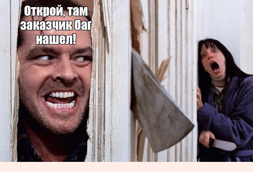
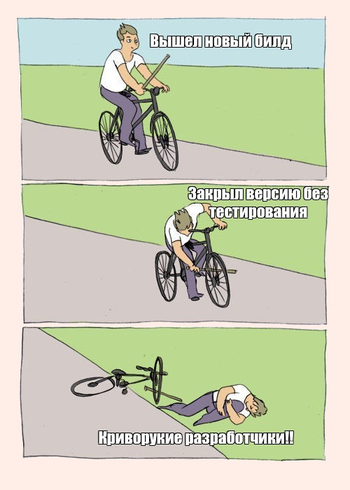

▲
НАВЕРХ
⬇ СКАЧАТЬ РЕЗЮМЕЗагрузка...
Про собеседование
Подыскиваешь теплое местечко, чтобы посадить жопку, и тут прилетает отклик мечты? Прежде чем отправляться трясти сертификатами перед эйчаром, прочти мои советы. Особенно, если тебя немного мутит от перспективы литл конверсейшн и вообще ты, мать его, мизантроп.
Собеседование — это стремно
Да что там стремно, это пиздец как страшно. Руки потеют, ноги отказывают а голос становится как на записи. То есть что-то близкое к первому альбому Muse. В общем, чтобы предотвратить паническую атаку и не сбежать ненароком обратно в лифт, увидев офис, рекомендуем кой-чего разузнать и подготовиться морально:
Собеседование на английском. Как выжить
Вааащет, если ты метишь в тестировщики, английский не должен быть проблемой. Другое дело что стресс, все дела, как в школе — Лондон из э кэпитал — не прокатит. Пара советов. По уровням, все как мы любим.
Тотальный пиздец. Это когда ты пишешь в резюме уровень В2 или, о май гад, #упасибоже, С1, просто потому что бабушка и кот так считают, а в разговоре тянешь волынку «май нэйм из», «ай градьюэтид», а больше не тянешь, только смотришь на эйчра и глазами, как рыба, лып-лып. Тут просто сразу уползать в нору.
Херовато, но не смертельно. Шаблонные ответы, явно отрепетированные. Как будто отвечаешь домашку. Напряжено все: лицо каменное, сфинктеры жим-жим. Не надо так. Это производит впечатление биоробота. Лучше сделать пару ошибок, но показать эмоции. Собеседование — это диалог, а не допрос с лампой в лицо, блеать.
Ослепительно, великолепно. На собеседовании могут (и будут, гыгы) задавать вопросы по ходу разговора: так сразу понятен реальный уровень. Внятный живой ответ, пара-тройка шуточек — и вот уже никому не интересно, куда делся твой артикль и что там со второй формой неправильного глагола. Вы приняты, остальное на внутренних курсах добьем. Или они нас, но это уже другая история.
И вообще
Слово-то мерзкое какое: со-бе-сееее-дование. Меньше пафоса, господа. Это просто встреча. Она может быть охуительно прекрасной или невъебенно отстойной, но все, что от тебя зависит — надеть что-то визуально приятнее, чем обычно, замазать прыщи тоналкой (парней тоже касается) и выйти рассекать личиком воздух. На пути к мечте, без фиги в кармане. Сломать ногу! В смысле, удачи там, хули
Словарь тестировщика
Баги
Баги это ошибки в проекте, которые и должен пофиксить (найти, опознать, задокументировать) тестировщик. Тем, кто уже увидел себя Добрыней Никитичем, в доспехах сияющих с мечом-кладенцом супротив багов окаянных вышедшим: окститесь. Никитич-то помните с кем бился? Со Змеем Горынычем. Так и в QA: баги есть, были и будут есть. Задача мануального тестировщика — обнаружить те из них, что напрямую повлияют на работу ПО. И сделать это до этапа продакшена, а то съедят уже самого борца с мировым неизбежным злом: такая вот пищевая цепочка.
Фича.
Задача, которую делали разработчики. Типа, так было задумано. Ты там геморрой высидел над отчетом, уот из вронг. А тебе в ответ - "Won`t Fix", оно же «Это фича. Так было задумано». И если в этот момент у тебя глазенки от ярости не полопались, прими наши поздравления: тестировщик из тебя, видимо, выйдет первее, чем ты из кабинета…чтобы разъебать нахуй всех этих лицемерных опездолов!! В общем, не всякий баг это баг, он может быть и фичей. Принять, понять, простить.
Импрув.
Ну, типа, импрув с англосаксонского — это улучшать. Поэтому в QA импрувом называют все пиздец охуенные доработки, которые ты (и твой геморрой) оформите и представите в виде отчета по проекту. Чтобы вот это вот глючное говно стало вторым Вайбером, Шазамом, Энгри Бердс. Составление импрува это священный момент, таинство, откровение для тестировщика. Примерно как обнаружить себя в труселях с колбасой за щеками в три ночи у холодильника. В гостях, ога.
"Не на нашей стороне".
Магическая формула, используется как мел в оккультных ритуалах. Тот, которым границу защитного круга очерчивают, ога. Услышать эти 4 слова можно от разработчиков. Ты им — список багов и недоработок, от которых пользователю с этим вот ПО только пиздануться можно, а они тебе «Не на нашей стороне», мол, изыди, демон. И перестают фиксить баги. А ты хочешь пофиксить их, читать как «отхуярить», ибо — за что?!
"Не воспроизводится".
Вот знаешь, есть такой человек-сцыкло. Вот когда такой работает разрабом, и не хочет больше фиксить баги, то есть мразь, мешает твоей работе, но духу сказать «НЕ НА НАШЕЙ, БЛЯДЬ, СТОРОНЕ» не хватает… вот тогда ты услышишь «Не воспроизводится». Просто прими это. В крайнем случае, плюнь в кофе.
"Не баг, а фича".
Я уже говорил выше и еще раз повторю: галимая отговорка разрабов. Уточним план действий? Членовредительство, мелкое пакостничество, подрывающий пердак, буддизм. Чередовать в зависимости от дня недели и выражения лица автора сообщения. На всякий случай — завещать кактус. В случае благополучного исхода — осознать бренность бытия и фиксить баги дальше.
"Пошли на кухню".
Ура, перерыв. Можно заварить чаек, ползать по чужим ссобойкам в холодильнике, покидаться корпоративными апельсинами и зажевать печеньками новости о том, сколько зарабатывает дебил Вася после того, как съебал к конкурентам.
"Пошли пропердимся".
Заметил, что лучшие послания — прямые послания? Вот и тут так же. На предложение коллег пойти пропердеться нужно именно что пойти пропердеться. Лучше начать с эффектного подбрасывания себя на стуле: со временем научишься реагировать на данное заманчивое предложение с первых, так сказать, «по».
Страхи тестировщика
Тестировщики — люди вдумчивые, скрупулезные, с аналитическим складом ума. Страхов у них, то есть, дохуища. И 99% - по работе.
Когда баг нашел заказчик
Слышишь эти грустные звуки вдалеке, которые нарастают? Этот вой на болотах, эти первые аккорды «Лакримозы» Моцарта, эту сигнальную пожарную сирену через квартал? Все это сольется в унисон, когда разразится буря. А она разразится, и пизданет по всей команде, но особенно — по тебе, криворукий ты еблан.
И сам заказчик может быть няшкой и понимающим чуваком, но такое пренебрежение его продуктом, идеей, инвестициями, в конце концов, это как плевок в душу. Как подсмотреть лишнего в раздевалке да и пиздануть в общей компании по пьяни. Доверие, в общем, подорвано.
Остается только падать в ноги, обещать исправить и где-то к месту ввернуть про «устраненные 66% недочетов» и «что касается реализации требований в настоящий момент». Переключить внимание, ога. Не забывая устранить тот самый ебучий баг в рекордные сроки.
Когда баг был обнаружен на проде
Сценарий типичного ночного кошмара тестировщика. Да что там, всего QA отдела. Заходит как-то раз продукт менеджер на продакшен сервере, кликает, и тут… Баг. Багчище. Жопа, короче.
Хорошая новость в том, что решение простое и элегантное, кодовая операция «выпустить хотфикс до того, как владелец продукта увидит ЭТО». Ну и действовать надо быстро. Максимально, бля, быстро.
Когда на ретроспективу позвали только тебя
«Ну все пиздец, разбор полетов, в наличии один подстреленный воробей» — примерно такие ощущения будут сопровождать тебя по дороге, верно? В голове бегущей строкой все работы, выполненные по проекту, все тонкие моменты, неочевидные штуки, пара-тройка запрятанных под ковер «и так сойдет», десятки вариантов, что можно было улучшить, но не дошли руки… И литры холодного пота по спине.
На самом деле все не так страшно, в смысле ретроспектива в Ай Ти — это же обмен мнениями, принятие решений по проблеме, мгм? Пока час Х не наступил, лучше преисполняться гордости и чесать ЧСВ на тему «какой я значимый птиц», мол, решили считаться с тобой из всей команды, чем нервничать почем зря, ожидая прилюдного бичевания. В крайнем случае, вспомнишь мой топ отмазок
Когда тестировать начинает команда заказчика вместо тебя
Тревожный знак, воистину. Тучи сгущаются, дождик собирается, паранойя крепнет. Возможно, что-то не так с твоей манерой общения, включая отчеты, что на той стороне хотят видеть только, собственно, ту сторону? Лучше бы аккуратно выяснить у PM, откуда ветер дует. В худшем варианте такое «идите нахрен, господин тестировщик» может означать твой серьезный проеб, а тут уже действительно не до шуток.
Когда у тебя просят предоставить максимально подробный отчет после тестирования
Либо ты свято уверовал, что краткость — сестра тлнт, и исключил гласные или еще каким читерством-дрочерством занялся над своими «фирменными» отчетами, либо твое рабочее время в соотношении с эффективностью вызывает вопросы у кормящих. То есть тех, кто платит за твой кофе и печеньки. Количество которых после таких вот просьб нужно сократить. И мемасиков тоже, да. А лучше охуеть и спросить прямо, мол, ачотакова с отчетами, норм же общались?
Когда заказчик хочет пообщатся только с тобой
К чему мне такая честь, бормочешь невнятно ты, сползая по стенке. Но так случается: ты стал слишком заметной фигурой на этой доске, осталось определиться: это шахматы или подавки, ты обрел вес и к тебе особое поручение или тебе сейчас объяснят, как надо работать, предельно на пальцах? Плохие новости: без обратной связи ты это не узнаешь. Так что выпей чего-нибудь «на травках» и топай обсуждать.
Когда посреди ночи ты видишь 73 пропущенных от заказчика и коллег.
Явно пиздец. Явно масштабный. Явно твое участие в этом. НО!! Пока ты спал, был в коме или в другой стране (73 звонка, серьезно, да?!), возможно, проблема решилась без твоего участия? И тогда перенабрав последний из пропущенных, ты услышишь в трубке «Уже не надо» вместо красочного описания себя, включая личностные качества, профессиональные навыки и умения и направления ближайшего путешествия. А может, и планов на бессрочный отпуск
Отмазки для тестировщика
Выходит такой свеженький багоборец с курсов, проходит все круги ада на собеседованиях, попадает на первое место работы. Учится тестировать, смотрят на продукт пользовательскими глазами, составляют отчеты и заставляют разрабов вджобывать над улучшением ПО и устранять ошибки. А потом что-то идет не так и — привет, отмазки.
«Я этот баг видел, не успел просто оформить»
Ну хорошо, хоть мемасики новые заценил и пару чашек кофе хлопнул. А то упахался совсем, бедолага. Есть вероятность, что пар-тройка таких «неуспеваний» — и над тайм-менеджментом придется работать, не отвлекаясь на офисную рутину. Потому что успеть оформить ошибку это, допустим, дохера тяжко неподъемно и лучше в другой фазе Луны, но черкануть для себя что-то можно? Если, конечно, было что черкать.
«У меня это не воспроизводилось»
Не иначе заговор. После таких громких заявлений остается только внимательно осмотреть рабочее место на предмет иголок, соли и других оккультных принадлежностей, спрятать кружку в стол от греха подальше и взломать почту тимлида: там наверняка пруфы из разряда личной неприязни и магического превращения кода в тот момент, пока вы отвернулись.
«Так было в дизайне»
Обычно речь идет о Minor или Trivial багах: некритичные «жуки», которые работу программы сильно не нарушают, дизайн не ломают. Неприятно, но пережить можно. С другой стороны, такую отмазку ведь легко проверить. И кто теперь тут идиоты?
«В дизайне этого не было»
Плохой перевод «Я не продумал тестовое покрытие так, чтобы охватить продукт наиболее полно». И да, про отмазки, которые легко проверить: мы как раз недавно обсуждали
«Я думал, что так и должно работать»
Умозрительно представлять сферических коней в вакууме, там же ставить галочку Done и идти дальше, вообще-то, не совсем задача тестировщика. Подумать, что пользователь ждет и проверить ручками — это уже ближе к QA. В общем, такой себе вариант «Пропустил, каюсь».
«Эту фичу проверял разработчик»
Допустим, это правда. Парадокс в том, что от этого она не перестает быть тупой_отмазкой. Ну например, какого хера ты даешь тестировать фичи кодерам, которые их же и писали? Для Васи код Васи идеален по умолчанию — это же код Васи! А денежку за то, чтобы все поломать к хуям, чтобы сделать лучше, получаешь ты. Попытка перевести стрелки за плохую проверку показывает тебя как пиздабола и ябеду. Не надо так.
«Я это проверял, все идеально работало, видимо само поломалось»
Кажется, так может сказать только человек, который трепетно любит унижения и нарывается получить по щам. С другой стороны, это характеризует оптимиста: само поломалось — само и починится! Правда, в сей светлый момент автор послания, вероятно, будет занят сбором вещей и прощанием с коллегами.
Если серьезно
В сфере QA бывает всякое: и банальная нехватка времени (на полное тестирование перед релизом после доработки), нехватка информации о продукте, странные требования заказчика, сложные коммуникации в команде… И есть человеческий фактор: так себе квалификация или атрофированное чувство личной ответственности за результат.
Так вот помните, что каждый раз, когда вместо выполнения своих обязанностей или простого принятия факта того, что вы наебнулись, с последующим же исправлением косяков, вы судорожно перебираете отмазки — это выглядит так же по-взрослому и красиво, как эксгибиционист в автобусе. И чувства вызывает соответствующие.
Мораль. Не проебывайтесь, а если уж случилось — найдите силы признаться честно, и предложить варианты исправления ситуации, и сделать. Аминь.